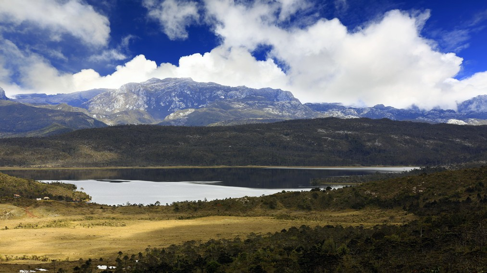
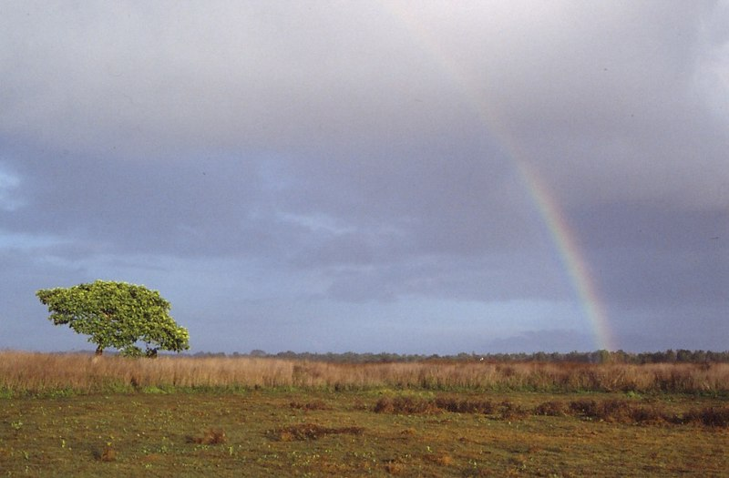

Pariwisata Papua

Taman Nasional Lorentz
Taman Nasional Lorentz adalah sebuah taman nasional yang terletak di provinsi Papua, Indonesia. Dengan luas wilayah sebesar 2,4 juta Ha; Lorentz merupakan taman nasional terbesar di Asia Tenggara. Taman ini masih belum dipetakan, dijelajahi dan banyak terdapat tanaman asli, hewan dan budaya. Pada 1999 taman nasional ini diterima sebagai Situs Warisan Dunia UNESCO. Wilayahnya juga terdapat persediaan mineral, dan operasi pertambangan berskala besar juga aktif di sekitar taman nasional ini. Ada juga Proyek Konservasi Taman Nasional Lorentz yang terdiri dari sebuah inisiatif masyarakat untuk konservasi komunal dan ekologi warisan yang berada di sekitar Taman Nasional Loretz ini.
Dari tahun 2003 hingga kini, WWF-Indonesia Region Sahul Papua sedang melakukan pemetaan wilayah adat dalam kawasan Taman Nasional Lorentz. Tahun 2003- 2006, WWF telah melakukan pemetaan di Wilayah Taman Nasional Lorentz yang berada di Distrik (Kecamatan) Kurima Kabupaten Yahukimo, dan Tahun 2006-2007 ini pemetaan dilakukan di Distrik Sawaerma Kabupaten Asmat. Nama Taman Nasional ini diambil dari seorang Penjelajah asal Belanda, Hendrikus Albertus Lorentz,yang melewati daerah tersebut pada tahun 1909 yang merupakan ekspedisinya yang ke-10 di Taman Nasional ini.
Sumber: Wikipedia
Danau Habema
Nama asli danau Habema sebenarnya adalah Yuginopa, sedangkan nama Habema diambil dari nama seorang perwira Belanda, yaitu Letnan Habema yang ikut mengawal tim ekpedisi ke puncak Trikora pada tahun 1909. Luas danau ini kurang lebih sekitar 224,35 hektar dengan keliling 9,79 kilometer dan berada di kawasan Taman Nasional Lorentz Papua.
Berjarak sekitar 48 kilometer dari kota Wamena, menuju danau Habema bukanlah perkara mudah. Jalan yang terjal, serta kontur tanah yang berbukit-bukit membuat siapapun yang ingin mencapai danau butuh kendaraan dengan penggerak 4 roda. Mungkin bila jalanan rata, dengan menggunakan mobil, 48 kilometer akan dicapai dengan waktu yang relatif singkat, sekitar 1,5 sampai 2 jam saja. Namun, karena kondisi alam yang cukup ekstrim, maka menuju Habema dengan menggunakan mobil dapat memakan waktu hingga 3 jam.
Begitu lamanya waktu yang ditempuh tidak akan terasa bila kita menikmati setiap pemandangan yang dilewati selama perjalanan. Hamparan bukit dengan pohon-pohon tinggi dan udara yang sejuk akan memanjakan mata di sepanjang jalan. Apalagi, bila kita berangkat dini hari dan mendapat kesempatan menikmati matahari terbit di antara pegunungan yang berangkai indah. Pemandangan yang langka dan terasa begitu berkesan.
Lelah selama perjalanan akan terbayar ketika sampai di Habema. Pemandangan yang begitu indah, megah dan sangat mempesona akan menyambut kita. Hamparan padang rumput di sekitar danau dan tanaman-tanaman endemik Papua seperti Rumah Semut atau anggrek hitam akan membuat kita bersyukur menjadi bagian dari alam indah Papua. Bila beruntung, berbagai jenis burung khas Papua, seperti Cendrawasih pun dapat kita temui atau paling tidak kita dapat menikmati kicauannya.
Sejauh mata memandang, lansekap pegunungan akan menjadi menu utama, hingga mata kita tertuju pada sebuah danau luas yang berlatarkan gunung bersalju nan indah. Sesaat kita akan terdiam dan menyadari bahwa inilah danau Habema. Sangat indah seperti di lukisan, apalagi danau tersebut berlatarkan Gunung Trikora (dahulu bernama Puncak Wilhelmina) yang menjulang tinggi dengan hamparan salju khatulistiwa di puncaknya. Panorama ini akan membuat kita seolah tidak sedang berada di Indonesia.
Rasa kagum ini sangat wajar untuk dirasakan, mengingat keadaan alam di sekitar danau Habema yang sungguh berbeda dari kondisi alam Indonesia pada umumnya. Suhu udara yang mencapai 0 derajat pada malam hari dan 10 derajat pada siang hari, hamparan padang rumput yang luas, jenis tumbuhan pegunungan yang sangat unik, lingkungan yang sepi penduduk, hingga salju yang terlihat jelas di puncak Trikora membuat Habema menjadi spesial dibandingkan wilayah pegunungan lain di nusantara.
Sumber: indonesiakaya.com
Taman Nasional Wasur
Taman Nasional Wasur merupakan bagian dari lahan basah terbesar di Papua dan sedikit terganggu oleh aktivitas manusia, ini disebabkan oleh adanya masyarakat adat yang bertempat tinggal di dalam kawasan dan merupakan pemilik hak ulayat hutan adat. Biodiversitasnya membuat taman ini dijuluki sebagai "Serengeti Papua". Sekitar 70% dari luas wilayah ini terdiri dari sabana, sementara vegetasi lainnya merupakan hutan rawa-rawa, hutan monsoon, hutan pantai, hutan bambu, padang rumput dan hutan sagu. Tamana yang dominan meliputi spesies mangrove, Terminalia dan Melaleuca.
Sumber: Wikipedia